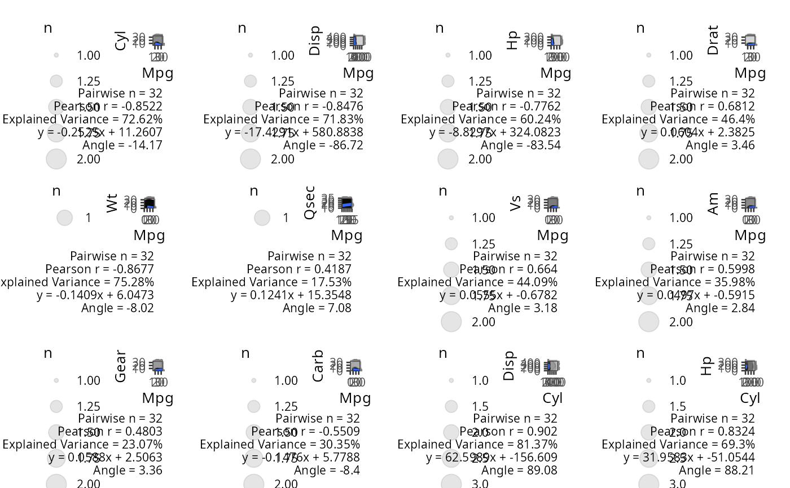
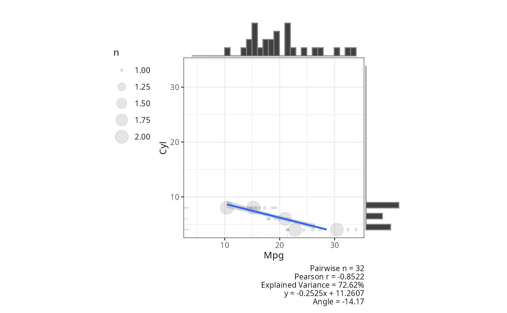
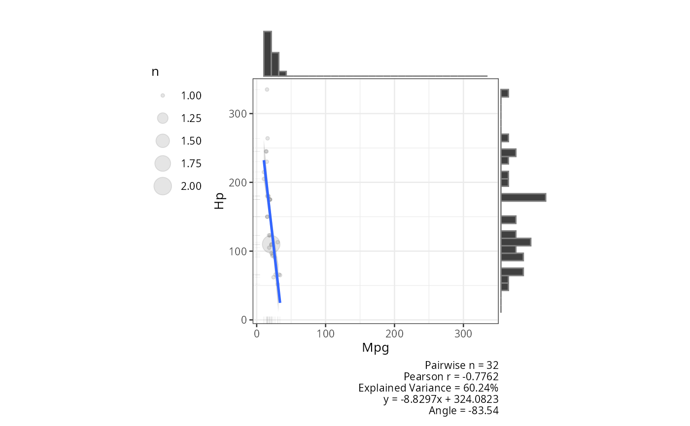
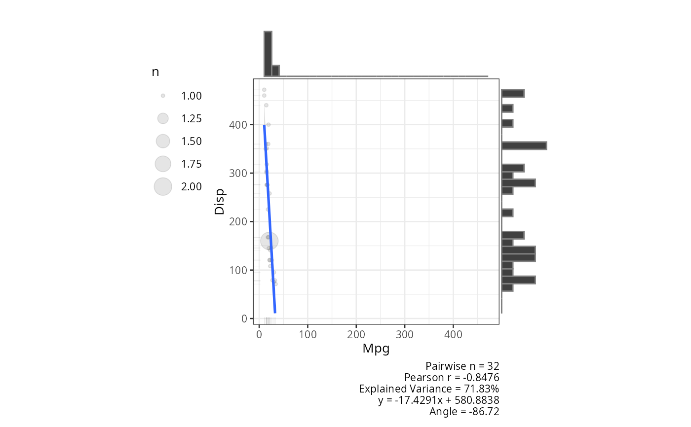
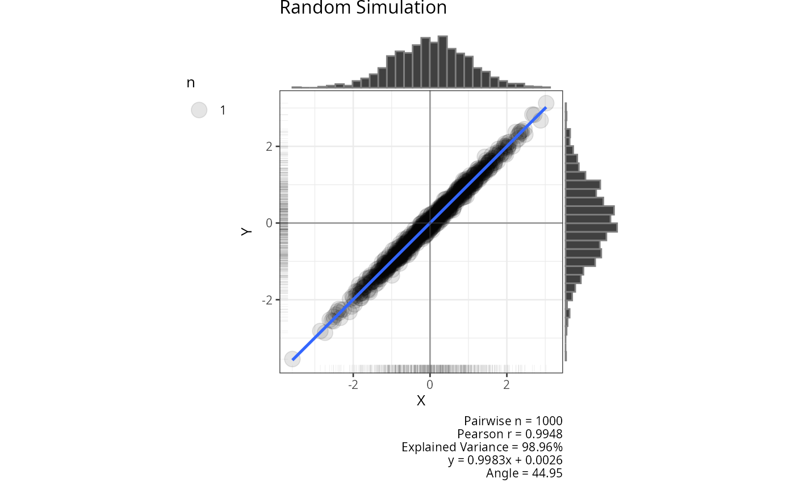

Scatter plots for all variable pairs in a data frame
plot_scatterplot.RdGenerates a scatter plot with a smoothing line and marginal
histograms for every pair of numeric columns in df. Each plot
includes Pearson r, explained variance, the regression equation, and the
regression angle in its caption (when the default y ~ x formula is
used).
When the number of pairs exceeds four times the available CPU cores the
plots are produced in parallel via future.apply, otherwise
sequentially.
plot_scatterplot(
df,
method = lm,
formula = y ~ x,
base_size = 10,
coord_equal = FALSE,
all_orders = FALSE,
title = "",
combinations = NULL,
string_aes = TRUE
)Arguments
- df
A data frame of numeric variables. When
dfhas exactly two columns the first is treated as the predictor and the second as the outcome.- method
Smoothing method passed to
geom_smooth. Accepts"lm","glm","gam","loess", or a function such asMASS::rlm. Defaultlm.- formula
Formula passed to
geom_smooth. Defaulty ~ x. When a non-default formula is supplied the caption shows only pairwise n.- base_size
Base font size in pt passed to
theme_bw. Default10.- coord_equal
Logical. If
TRUEboth axes share the same scale and limits. DefaultFALSE.- all_orders
Logical. If
TRUEboth (X, Y) and (Y, X) orderings are plotted for each pair. DefaultFALSE.- title
Character. Plot title applied to every panel. Default
"".- combinations
A two-column data frame specifying which pairs to plot. Column 1 is the x-variable name, column 2 is the y-variable name. When
NULL(default) all pairs are derived automatically fromdf.- string_aes
Logical. If
TRUEvariable names are passed throughstring_aes()to clean axis labels. DefaultTRUE.
Value
A named list of ggplot objects, one per variable pair. Names follow
the pattern "x_y".
Examples
result <- plot_scatterplot(df=mtcars, title="", coord_equal=TRUE, base_size=10)
plot_multiplot(plotlist=result[1:12], cols=4)

#> [[1]]
#>
# Two-column data frame: first column = predictor, second = outcome
plot_scatterplot(df=mtcars[,1:2], base_size=10, coord_equal=TRUE, all_orders=FALSE)
#> $mpg_cyl

#>
# Custom variable pairs
plot_scatterplot(df=mtcars, base_size=10, coord_equal=TRUE,
combinations=data.frame(x=c("mpg","mpg","mpg"),
y=c("cyl","hp","disp")))
#> $mpg_cyl
 #>
#> $mpg_hp
#>
#> $mpg_hp

#>
#> $mpg_disp

#>
# Simulated near-perfect correlation
x <- rnorm(1000)
y <- x + rnorm(x, sd=.1)
plot_scatterplot(df=data.frame(x,y), title="Random Simulation", coord_equal=TRUE)
#> $x_y

#>